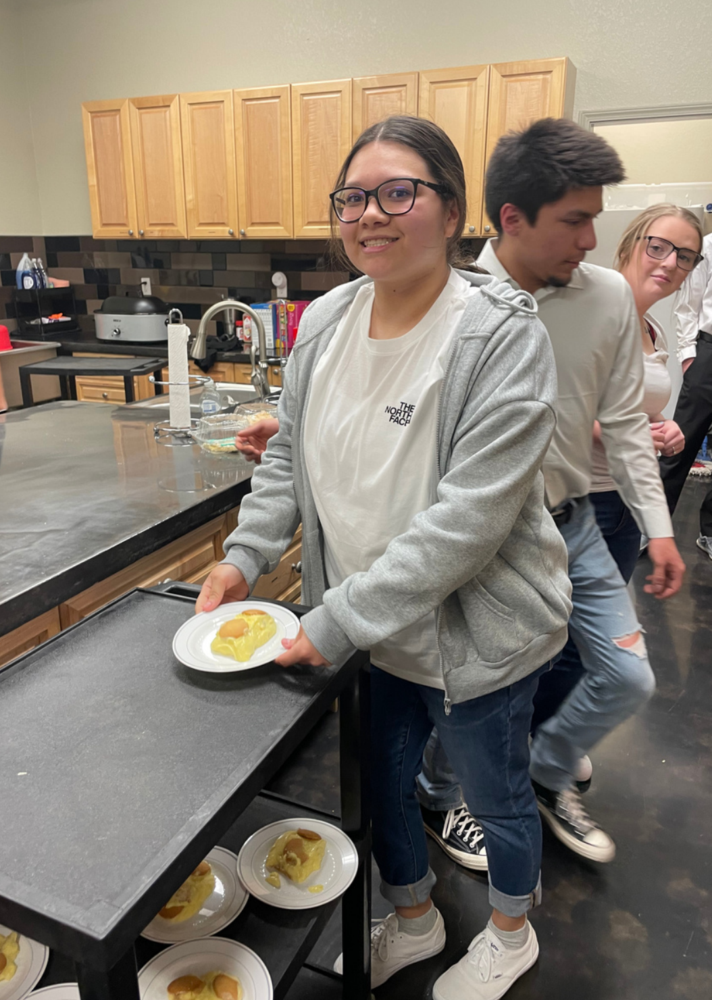
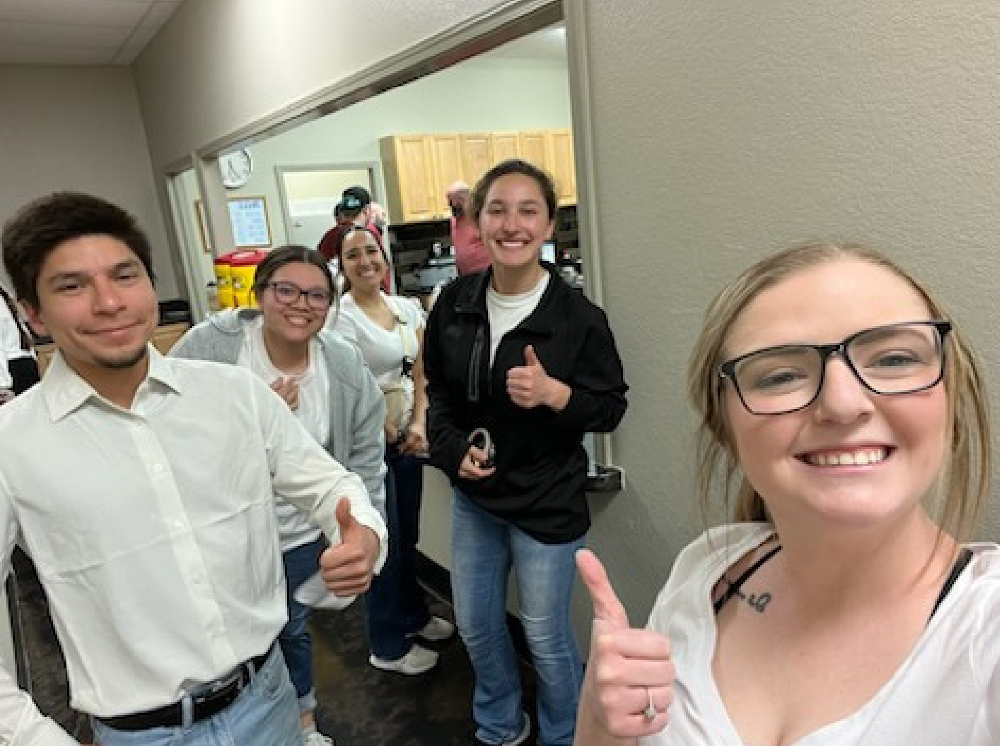
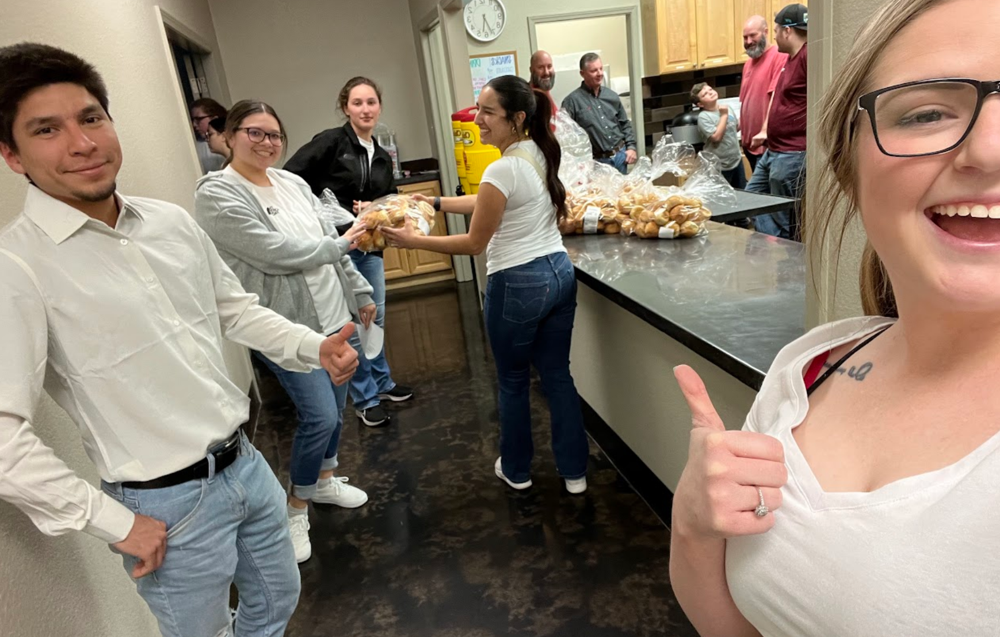
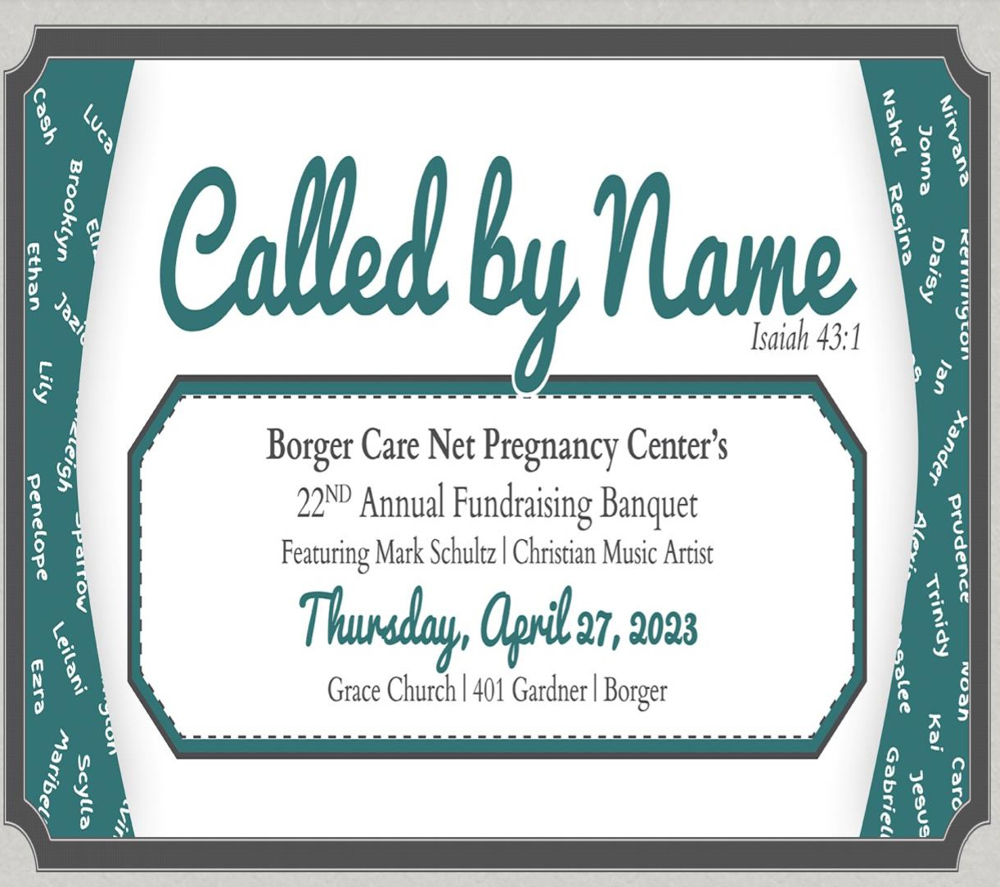

Professional Summary
Computer Information Systems Student at West Texas A&M University with experience in programming, data analysis, and software development.
Technical Skills
Education
Master of Science in Computer Information Systems & Business Analytics, West Texas A&M University (In Progress)
Bachelor of Business Administration in Computer Information Systems, West Texas A&M University, Dec 2025
Work Experience
Pricing Intern - Xcel Energy | May 2025 – Present Amarillo, TX
Developed and maintained SQL queries in Databricks to support pricing projects; created/updated tables, cleaned records, and validated data integrity.
Built Databricks dashboards to analyze energy usage and revenue trends.
Performed ETL processes in Databricks using Python to clean, format, and standardize CSV and Excel data.
Created and scheduled Databricks jobs to automate monthly processes such as table updates and dashboard refreshes.
Substitute Teacher - Borger Independent School District | August 2023 - April 2025 Borger, TX
Managed fast-paced classroom environments while prioritizing multiple tasks, following established procedures, and maintaining consistent structure.
Supported classroom technology and daily operations, including basic device troubleshooting, communication with staff, and adapting quickly to new assignments.
Skills
SQL: Experience querying, analyzing, and summarizing large datasets.
Data Analytics & Visualization: Databricks and Power BI for analyzing large datasets, creating dashboards, and visualizing trends.
Programming and Web Development: HTML/CSS (static websites, responsive design, page structure) and C# Fundamentals (variables, loops, functions, and OOP).
Microsoft Office: Experienced in Excel (data analysis, charts), Word (reports), PowerPoint (presentations), and Outlook (email, scheduling).
Achievments
President's List, WTAMU, Fall 2023
Outstanding Accomplishment in Biology, Frank Phillips College, 2023
Phi Theta Kappa Member, January 2023
Volunteer Experience
Server - Borger Care Net Pregnancy Center Fundraiser Banquet
Fellowship Church, Borger, TX (April 2023)
Supported a high-attendance community fundraiser by assisting with event flow, coordinating with team members, and helping maintain an organized and welcoming environment.



